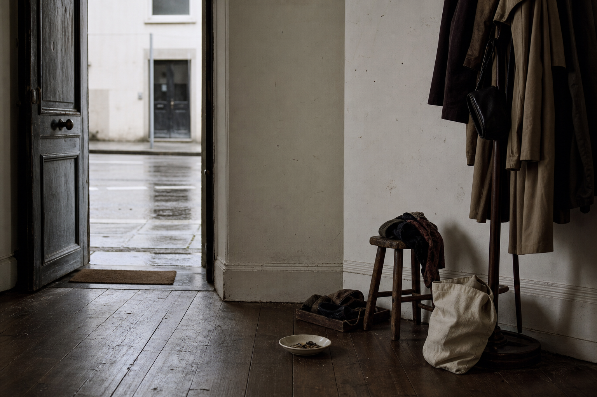
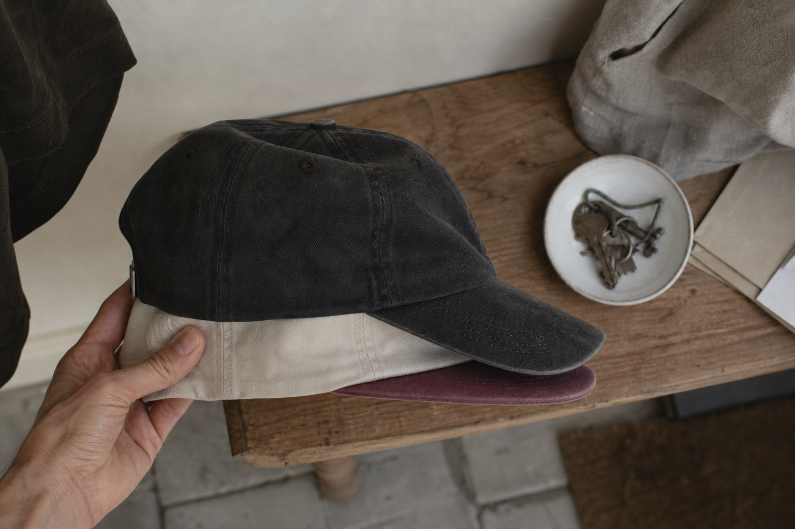
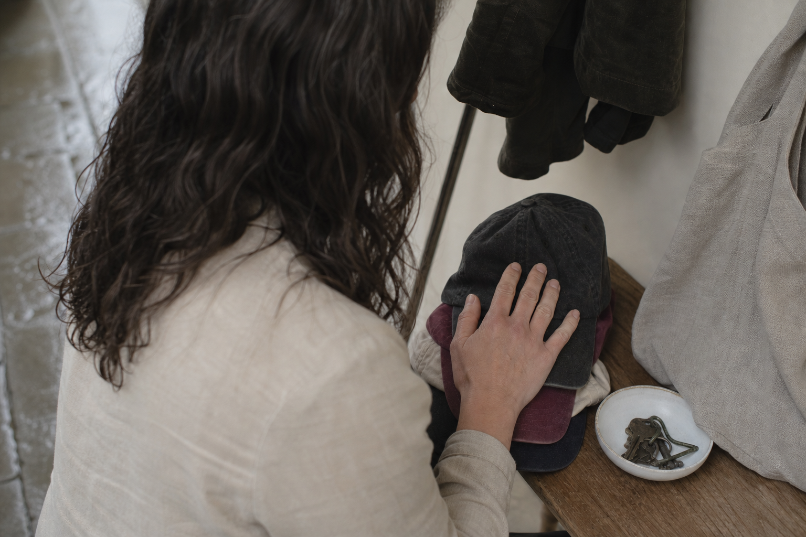
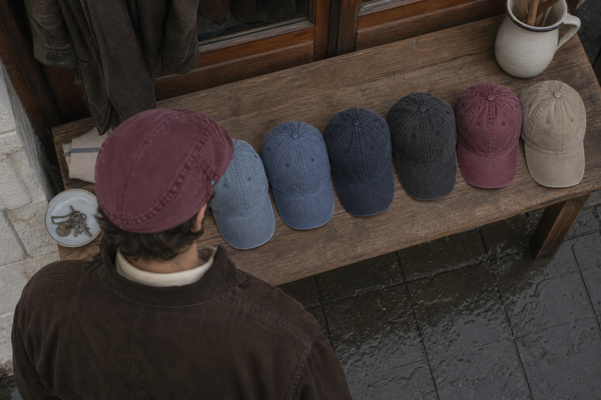
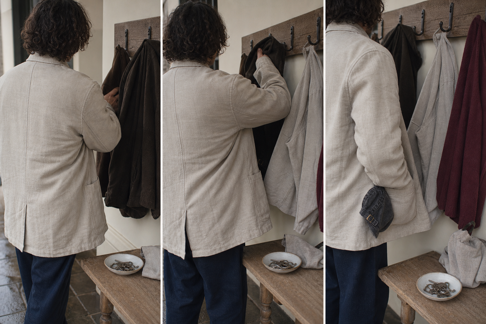
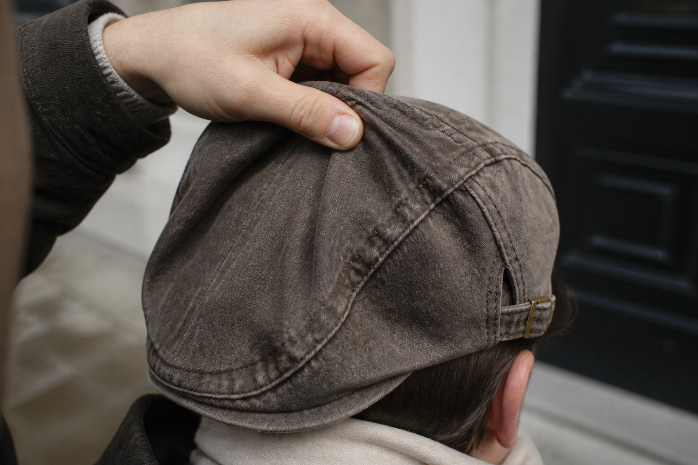

Counted in hours, not minutes
A soft washed-denim shell that sits without gripping, so a whole dinner passes without you touching it once.
The Washed Denim Collection
Free shipping in France, thirty days to send it back. Nine washes. One cut, made to fit. Everything below explains why the last four didn't.
Count the ones in your hallway. Four bought, four kept for outdoors only, four pulled off in the first three steps inside a room. That isn't taste changing its mind four times. That's the same fault repeating itself, and a fault that repeats has a cause you can measure.
So we measured it.
The cause isn't your head. It's about two inches of peak and where the line sits on your forehead, and both of those are numbers on a pattern, not facts about you. Which means this isn't a fifth replacement. It's a repair.
9 washes, $29.99 each, free shipping in France, thirty days to send it back

Suspect one: the peak
Not your head. The front edge of the cap, and how far it runs.
Start where the evidence is easiest to measure. A sports peak runs long and stiff, and it lays a hard horizontal line straight across your forehead. Every photograph you dislike has that line in it. Hold a ruler flat against your brow and you'll see what it does: everything above the ruler stops being a face and starts being a shadow. That's not your reflection. That's two inches of moulded plastic doing the framing for you.
An Ashcroft peak is short and flat, and it's cut from the same piece as the shell, so there's no sharp break where one ends and the other begins. Nothing juts. Nothing casts. The top of your face reads as drawn, not pressed down.
Two inches, measured.

Second variable: where it sits
The shell continues the head instead of closing it off.
Second measurement, taken after the peak. Not how far the cap projects forward, but how low it sits on the head. Every Ashcroft cut sits low to follow your face, and that single choice decides whether the top of your head reads as a line or as an edge.
Think of a lid on a jar. It meets the glass at one hard rim, and everything above that rim becomes a separate object. Now think of a hand resting along a shoulder: same contact, no border. A soft washed-denim shell does the second thing. It sits along the skull rather than stopping on top of it, so nothing about the shape announces where you end and the cap begins.
That is the difference.

Third variable: the fit
The last measurement in the chain is the one you set yourself, once.
Peak length and where the line sits are fixed by the cut. The third variable is the only one left to you, and it takes about four seconds. One cut, made to fit: you pull the side-adjuster to the notch that suits your head, and that is the end of it. Set it once and it stays put. Like a watch strap you sized the day you bought it and have never touched since.
One notch. Done.
The shell is washed denim, soft in the hand from the first wearing. Nothing to break in over weeks, nothing that grips. That matters for the hours to come, not the first minute.
One honest number: the cut is made to fit any head up to 61 cm. Above that, write to help@ashcroft-flatcaps.com before you order rather than after.
What the geometry buys you
Not a cap you take off at the door. A cap nobody asks about.
Three hours at a table is the real test, and it is a test of pressure, not of looks. The denim is washed in the piece before it is cut, so the shell is soft in the hand from the first wearing, with no weeks of breaking in. It rests on the skull the way a hand rests along a shape, not the way a lid presses onto a jar. Nothing to shift, nothing to adjust, nothing to explain.
So it stays on.
Be clear about the limit. This is not a technical sports cap: it will not hold through fast movement or a bike at speed. It is built for the hours you actually spend in it, indoors and on the street, worn all year round.
A soft washed-denim shell that sits without gripping, so a whole dinner passes without you touching it once.
The side-adjuster is set one time and stays put. Nothing loosens over an evening, nothing needs a discreet fix.
Hold on through sport or fast movement. If you want a technical cap, this is the wrong product, and we would rather say so than take the return.
Nine washes, counted
The first hat decision you'll make on colour instead of coverage.
Count them: nine. Everyday light blue at one end, a burgundy that isn't afraid of colour at the other, and seven between. Every one of them a wash you pick because you like it, not because it hides something. That is the whole difference between the four in your hallway and this one.
Nine, not one.
The collection keeps growing, and new washes get added. Light blue reads as the one you'll reach for without thinking. Burgundy is the one people comment on. Both are the same cut, so the choice you're making here is style, and nothing else.

The sum you already know
Four bought. One worn. Count the doors.
Count what's on the hook by your door. Now count how many you actually wear. Then count the times this month you pulled one off walking into a restaurant, a meeting, a friend's kitchen. If the second number is smaller than the first, and the third number is bigger than both, you didn't buy the wrong cap four times. You bought the same wrong geometry four times: two inches of peak, a line set flat, a shell that sits on you like a lid.
Four purchases. One problem.
So do the last sum. One cut, one notch on the side-adjuster, set once. A cap you keep on through a whole dinner because nothing about it asks to be taken off. That's not a fifth replacement on the hook. That's the repair, and the mild months are the easiest time to start counting.
Quoted as received
Illustrative customer accounts, sent to help@ashcroft-flatcaps.com or left as reviews, reproduced word for word and translated from the original French.
We never ask anyone how many caps they owned before this one. They count them for us, unprompted, in the emails they send: bought, worn twice, taken off at the door, replaced.
Then the counting stops.
Read what follows as what it is. Two men, two accounts, no averages. One man's cap is not a measurement of yours, which is what the 100 days are for.
I started losing my hair at 40 and I bought cap after cap. All of them sports caps. I took them off the moment I walked in anywhere because I thought it looked scruffy. The difference with this one is that I don't take it off any more. My wife told me I looked like I'd chosen, not like I was hiding. I couldn't put it better myself.
Marc D., 47 - sent by email, published with his consent
I wore it through a whole dinner without anyone asking me why I was keeping my cap on. It's the first time.
Customer review, January 2026 - "Finally a cap I keep on at the table"
Proof by repeated use
Washed denim is washed before it is cut, so the hand is soft from the first wearing, not after weeks of breaking in.
Count the caps in your rotation now: four bought, none kept past the door. This one runs the other way. Day 1 it is already soft in the hand. Day 30 it has been folded into a coat pocket and put back on without keeping a marked crease. Day 100 it is the same cap, worn all year round, and you have stopped counting.
That is the difference between a repair and a replacement. You are not buying the fifth. You are ending the count at one.
One cap, kept.
The mild months are the easiest window to build the habit in. Start now and by the time the weather turns, the reflex of taking it off is already gone.

Side by side
Two objects, four criteria, and one honest limit.
You already did the sum in your hallway. Here is the same arithmetic applied to the two objects themselves, criterion by criterion, so nothing is left to impression.
One stays on.
And the honest part: this is not a technical sports cap. It won't hold on a bike at speed, and it isn't built to. It's built for the pavement, the pub, the table, worn day after day and put back on without thinking. If that's not the count you're making, this isn't your cap.
| The Washed Denim Collection | Alternative | |
|---|---|---|
| Peak | Short and flat, cut from the same piece as the shell. | Long, breaking hard across the forehead. |
| Where the line sits | Low, following your face. | Set on top, capping it. |
| How the shell holds | Soft washed denim on the skull, one notch on the side-adjuster, set once. | Gripped by a plastic strap at the back. |
| Indoors | Stays on through a whole dinner. | Comes off at the door. |
| Fast movement, sport | Not designed for it. Say so up front. | That's its job. |
Before you ask
Each one answered on the cut and the cloth, not on your head.
You have already done the arithmetic. What follows is the last column of it: the five doubts that stand between counting your old caps and choosing a wash.
None of them are about you. All five are about a peak length, a shell and a fabric.
Five answers.
Long peaks and stiff cloth make a cap look old, not the flat cap shape. Short peak, soft shell, washed denim: the line reads modern. Look at a profile photo before you decide.
A cap set low to follow your face is a cut, not a lid dropped on top. Washed denim already looks lived-in, which is why it reads as real character and never as a costume.
Cotton denim breathes. A sports cap lined with polyester runs warmer than this one does, indoors and out.
Nineteen percent of caps get thrown out because they itched or squeezed. The soft shell sits on the skull without gripping it, and the side-adjuster is set once, on one notch, then left alone.
One cut, made to fit. Set the side-adjuster once and it stays put on any head. Above 61 cm, write to help@ashcroft-flatcaps.com before ordering.

100-Day Fit Guarantee
It sits right, or your money back.
Every other cap in the hallway was a replacement. This one is a repair, and the only number you're asked to put against it is one hundred days.
Count them from the day it arrives. Wear it outdoors, in daylight, on a covered morning, not for ten seconds in front of a mirror. A mirror shows you a face holding still; a shop window at seven in the morning shows you what everyone else sees. If the line still isn't yours by day 100, it sits right or your money back.
Nothing sits on the other side of the scale. Free worldwide shipping, no minimum. Encrypted payments, details never stored. Support answering around the clock.
One hundred days.
30.000+ Satisfied Customers before me
Before you order
Everything left is arithmetic. Six minutes with a tape measure and you're done counting.
You've followed the count this far: the peak, the line, the caps in the hallway. What's left isn't an argument, it's a measurement you take once.
Tape, twice, done.
A soft tape measure, flat around the head, just above the ears and across the middle of the forehead. Don't pull it tight. Measure twice and take the second reading.
Take the smaller. Washed denim gives slightly with wearing, never the other way round.
Write to help@ashcroft-flatcaps.com before ordering. At the top of the range it can sit tight, and we'd rather tell you first.
Nothing. Free worldwide shipping on every order, no minimum purchase.
100-Day Fit Guarantee, money back. Returns and Refunds Policy on the site, payments encrypted, card details never stored.
help@ashcroft-flatcaps.com, or 24/7 customer support, seven days a week.
The end of the count
The reflex had a cause. The cause was geometry. Geometry is a thing you fix once.
Here is where the sum lands. A short peak, a line set low, one cut and one notch on the side-adjuster: none of that asks anything of my head. It was measured, not guessed, and it holds for anything up to 61 cm - above that I write in first.
So the choice left is colour. Nine washes, everyday light blue through to the burgundy.
And the mild months are the ones where it goes on every morning without thinking. Wait, and I've spent another season taking something off at the door. This one I set once, and repair the habit instead of replacing the cap again.
One wash. Then done.
100-Day Fit Guarantee: it sits right, or my money back. Free worldwide shipping, no minimum.